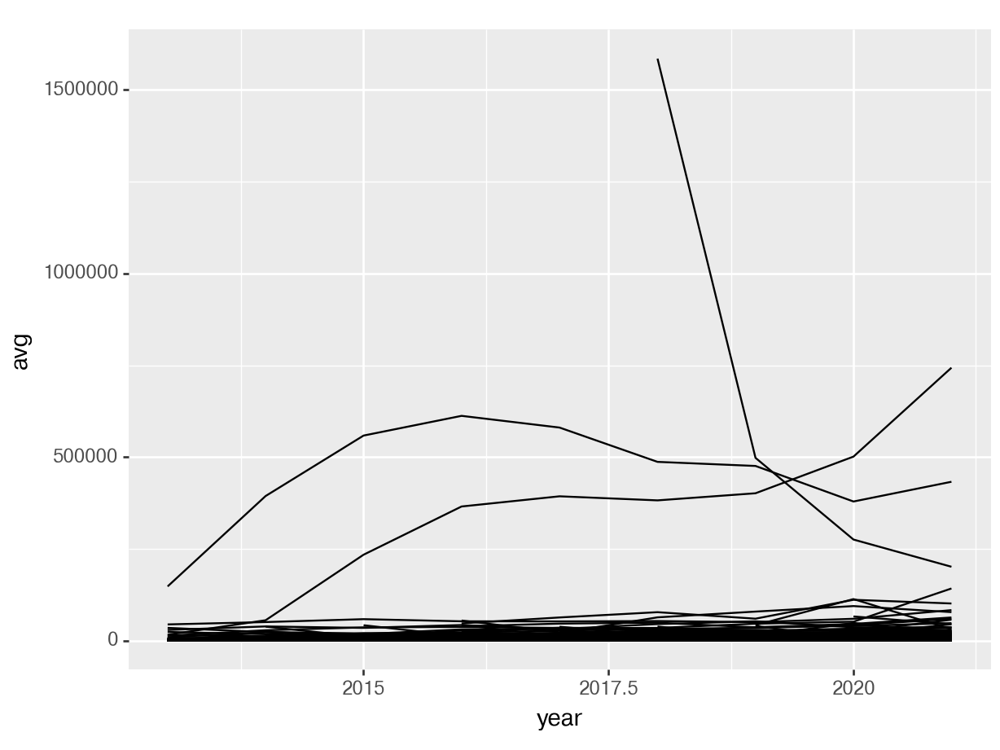

Note: This assignment must be submitted in github classroom.
Steam Games
This week’s homework data is from TidyTuesday, an organization that provides datasets every Tuesday for people to practice their data tidying and manipulation skills. See the readme for more information.
Data Dictionary
variable
class
description
gamename
character
Name of video games
year
double
Year of measure
month
character
Month of measure
avg
double
Average number of players at the same time
gain
double
Gain (or loss) Difference in average compared to the previous month (NA = 1st month)
peak
double
Highest number of players at the same time
avg_peak_perc
character
Share of the average in the maximum value (avg / peak) in %
games <- readr::read_csv('https://raw.githubusercontent.com/rfordatascience/tidytuesday/master/data/2021/2021-03-16/games.csv')
Rows: 83631 Columns: 7
── Column specification ────────────────────────────────────────────────────────
Delimiter: ","
chr (3): gamename, month, avg_peak_perc
dbl (4): year, avg, gain, peak
ℹ Use `spec()` to retrieve the full column specification for this data.
ℹ Specify the column types or set `show_col_types = FALSE` to quiet this message.
library(ggplot2) # load ggplot2 package
General Instructions:
Pick one language, R or Python, to start with.
Once you’ve finished all of the tasks in one language, try to replicate them in the other language.
R: Replicate the plot
Your first goal (in R) is to get to this graph by breaking down the problem (replicating the graph) into smaller steps that make sense and that you can accomplish piece-by-piece.
Target plot to replicate - you can also see a local file if you open plot0.png
Problem Steps
Make a list of steps that will be necessary to get the data you have into this form.
Problem Code
Provide code that sequentially works through your list of steps to produce the graph. You might put your steps as comments to remind yourself what you’re doing at each point in the code.
# Code for step 1 goes here
Python: Replicate a (different) plot
# Run this if you haven't installed plotnine alreadyreticulate::py_install("plotnine")
import pandas as pdfrom plotnine import*games = pd.read_csv('https://raw.githubusercontent.com/rfordatascience/tidytuesday/master/data/2021/2021-03-16/games.csv')
Plot to replicate - you can also open plot1.png to see a local file
This plot shows the 5 games with the most average users in March of 2020. It is ok if you can replicate this plot to the point where the legend doesn’t show up properly, as in this image:
Legend not quite right - see plot2.png in the project folder
Problem Steps
Make a list of steps below that will be necessary to get the data you have into this form.
Problem Code
Provide code that sequentially works through your list of steps to produce the necessary table of games.
Useful Hints
R
month.name is a vector containing month names that you can use to create a factor variable. Factor variables can be easily converted into numeric variables. This might help you get a numeric month, which might help you get to a fractional year. Alternately, you can use the match() function to get a numeric month by using match(dataframe$month, month.name).
dplyr::filter() is a function that will subset a data frame based on a logical condition. It might be easier to use than logical indexing (though you can use either)
To get a line graph in ggplot2, use geom_line(). Using aes(color = varname) will color the lines by variable name.
Some sample code to make a line graph in ggplot is provided below:
library(dplyr)# Get only january months so that there's one point a yearjan_data <-filter(games, month =="January")# x axis is year, y axis is average players# group = gamename says draw one line for each gameggplot(data = jan_data, aes(x = year, y = avg, group = gamename)) +geom_line()
Note that you will need to modify this code to use the correct data frame (that you generate) as well as to e.g. use color.
Python
Pandas will let you sort a data frame in decreasing order of variable x using sort_values('x', ascending = False)
You can select rows of a python data frame that match a list using .isin()demo
Using the .assign() function to create new variables will reduce the number of errors you run into. You may be able to get the correct answer without this tip, but if you run into a ‘modify on copy’ or ‘copy on write’ error, consider using .assign().
Sample code to make a line plot in plotnine is provided below:
# Get only january months so that there's one point a yearjan_data = games.query('month == "January"')# x axis is year, y axis is average players# group = gamename says draw one line for each gameggplot(jan_data, aes(x ="year", y ="avg", group ="gamename")) + geom_line()
<Figure Size: (640 x 480)>

Note that you will need to modify this code to use the correct data frame (that you generate) as well as to e.g. use color.